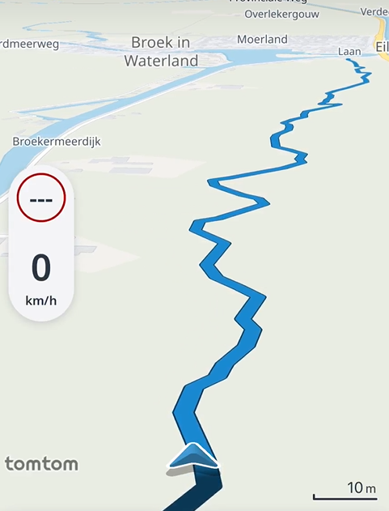
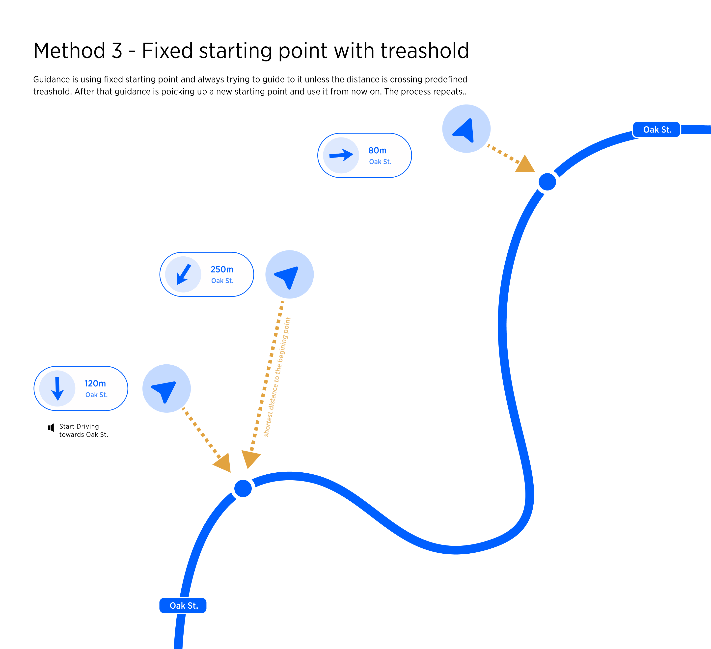

| Interaction Designer | Alexey Opokin |
|---|---|
| Visual Designer | Georgios Koultouridis |
| PM | Joost Pennings |
| Visual Design Specification |
Placeholder page for the off road navigation use cases.
Currently the following use cases can be identified:

Driver diverts from track
Driver diverts from track to on road
Off-road guidance proposals (option 3)
